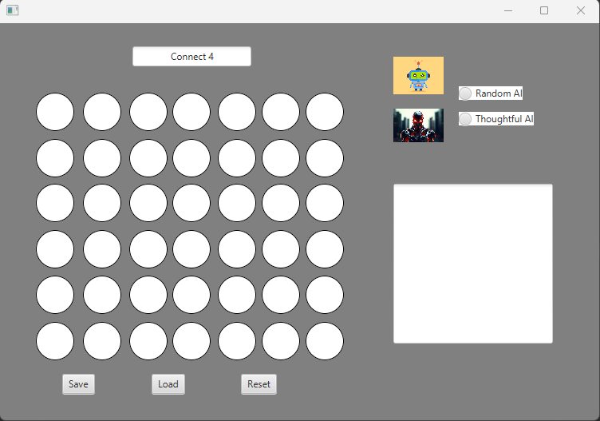

Technical Portfolio
Python Dungeon Crawler
- Implemented and constructed a board game application using Python to take input and make according game decisions as part of a development team
- Planned and implemented a 2 dimensional array structure in order to represent a game board accounting for video game elements such as enemies or obstacles
- Utilized variables and conditional logic in order to account for in game statistics such as health points
Check out Python game development
JavaFX Connect4 Game
- Used JavaFX to create a GUI application to represent a Connect4 Board logically tied to a shadow structure with components across multiple classes
- Implemented a log using File IO to keep track of user and computer moves including functions to save and load files with file reader and writer
- Implemented boolean logic to account for win logic based on the shadow structure using object rules
- Created Random and Thoughtful AI models to play against the user

Learn more about JavaFX
Raspberry Pi Pico Relay
- Wired hardware to use a relay on a Raspberry Pi Pico attached to a breadboard
- Programmed a motion center through GPIO pins in order to use relays to turn on a device
Learn more about Raspberry Pi
Go back to the Home Page